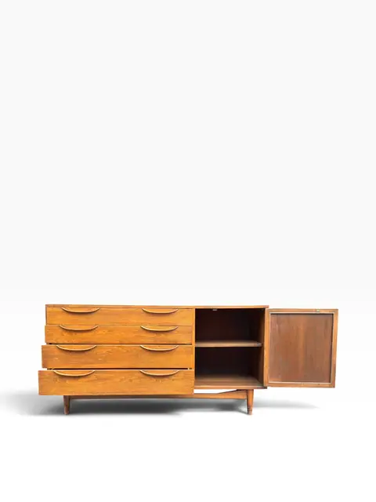
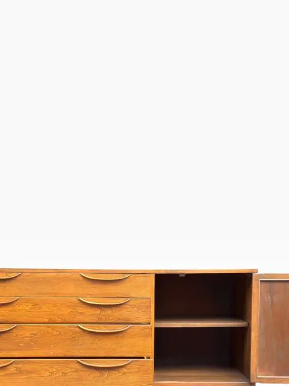
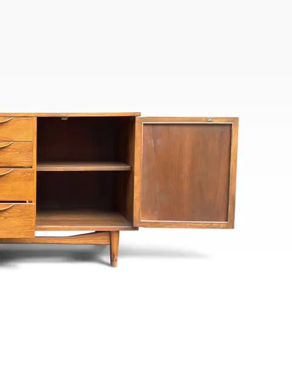
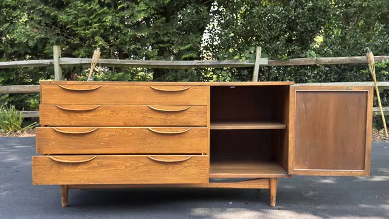
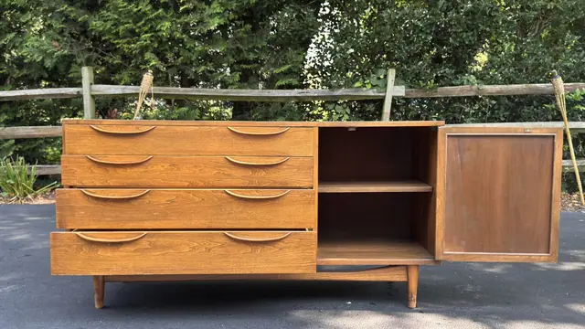
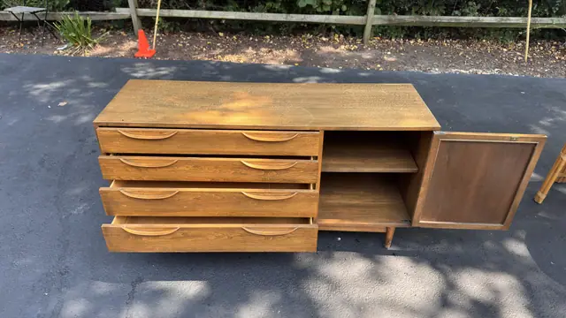
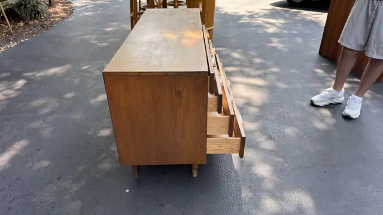
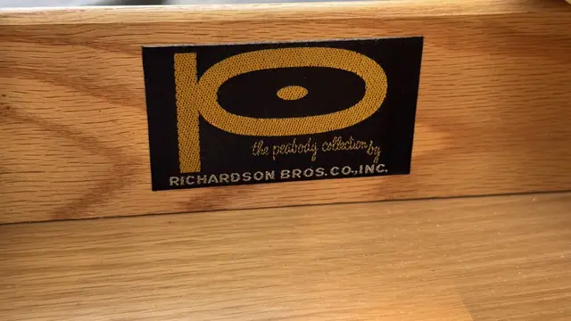

Handmade Objects
Lawrence Peabody 'Peabody Collection' Walnut Sideboard by Richardson Bros.
Lawrence Peabody (designer); Richardson Bros. Co., Inc. (manufacturer) · 20th century
Price Upon Request









About the Item
A 1960s American sideboard from the Peabody Collection designed by Lawrence Peabody for Richardson Bros. Co., Inc. (label photographed). Walnut case with four sculpted-handle drawers and a side cupboard, raised on tapered legs. Peabody's 1961 Citation for Merit collection, executed in walnut in the Danish taste. Attribution rests on the photographed label. Hardware matches ilan_082, suggesting both are Peabody Collection pieces. Note: UNVERIFIED LABEL ASSOCIATION — the 09 label photo ('the peabody collection by RICHARDSON BROS. CO., INC.') was identical to ilan_082/03 and kept in ilan_081; confirm from source shoot that this label belongs to this sideboard before publishing the attribution as fact.
Details
- Creator:
- Lawrence Peabody (designer); Richardson Bros. Co., Inc. (manufacturer)
- Creation Year:
- 20th century
- Medium:
- Walnut
- Period:
- 20Th
- Condition:
- Offered in the condition shown in the photographs.
- Reference Number:
- VO-351